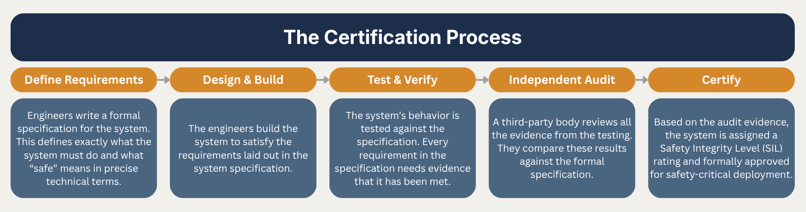
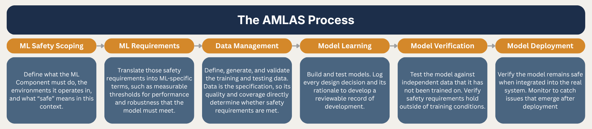

At BMW Group Plant Spartanburg in South Carolina, a humanoid robot called Figure spends its days picking up sheet metal parts and placing them into welding fixtures. Working with human colleagues on an active assembly line. It does this with sub-centimeter precision. No one told it how to do this; it learned. Behind every movement is a neural network, a system trained on thousands of hours of human demonstration that converts sensor readings directly into actions. It works. Remarkably well. But somewhere between the factory floor and the regulatory office, a question is going unanswered: how do you certify something safe when you cannot fully explain what it is doing?.
For most of the history of industrial machinery, that question had a straightforward answer. Systems deployed in safety critical industries such as industrial robotics, aviation, autonomous vehicles, and medical devices, have always required regulatory approval before deployment. Historically, this process has been built on formal specification. Engineers write down explicitly what the systems must do in every situation, providing a complete written description of system behavior. The process of certifying these systems consists of a third party verifying system behavior against this formal specification. This process has worked well for decades, because traditional systems do exactly as their engineers designed them to do.

Figure is not that kind of system. Like many technological advances today, Figure is machine learning based. Traditional systems follow explicit rules laid out by engineers, where every decision traces back to human-written logic. Machine learning works in a fundamentally different way. ML systems learn their behavior, they are a product of their training data. Nobody wrote the instructions because they emerged while training.
While this has made advancements previously unimaginable possible, it threw the idea of formal specification out the window. When behavior emerges from data, you cannot write a complete description of what the system will do in every situation. The behavior of the system lives inside billions of numerical weights that make up the neural network. This is not the same traceable human-readable logic that defines traditional deterministic systems. Where a traditional system produces a certain answer, an ML system produces a probable one. You can measure how well it performs, but you cannot prove what it will do.
Interactive comparison showing signal flow through a deterministic rule-based system versus a machine learning neural network as obstacle distance changes
This is where the traditional certification process breaks down. Every stage of the certification process depends on the specification. Testing, auditing, and approval all assume there is something to check the system against. The problem isn’t the complexity of the AI systems, it's a fundamental mismatch between what ML systems are and what the certification process was designed for. To safely and efficiently certify these systems requires a different process entirely.
But why is it so hard to redesign this process? You can describe what you want an ML system to do in plain English, but translating it into a formal specification is a different matter entirely. A specification requires precision. It requires you to define safe behavior in every possible situation the system may encounter. With a traditional system that is difficult but achievable. For an ML system acting in a continuous action space, the situations it may encounter are effectively infinite, and unlike a traditional system where identical inputs produce identical outputs, an ML system generalizes across inputs it has never seen, with no guarantee that similar situations produce consistent behavior. Researchers call this the semantic gap: the distance between what designers intend a system to do and what can actually be formally specified. A 2020 paper examining safety in autonomous systems identified this as one of the central unsolved problems in deploying ML in safety-critical environments. Without being able to formally specify intended behavior, there is nothing to verify against.
The second problem stems from responsibility. When something goes wrong, who is responsible? With a deterministic system, the answer is traceable. You find the rule that failed, the engineer who wrote it, and the decision that led to it, you learn and move forward. With an ML system, the opacity of the system makes it genuinely difficult to assign responsibility. Was it a training data problem? A deployment problem? An edge case nobody anticipated? These failures often cannot be attributed to a single decision, making accountability ambiguous. Ambiguity in safety-critical industries is cause for real concern. When a system fails, it has potentially life-threatening consequences, and when you cannot attribute that failure to a specific decision, it makes resolving it and learning from it much more difficult.
In response to these gaps, the research community has produced several technical approaches to bridging ML systems with the traditional specification framework. Researchers have tried baking safety into the training process rather than adding it afterwards. They have attempted guardrail based solutions where they wrap the ML system in a deterministic one so that unsafe outputs are caught and handled in a rules-based way. At ETH Zurich, there have even been papers working towards mathematical proofs that a system behaves consistently across similar inputs. Each of these approaches represents real progress and technical achievement towards making ML systems safe and certifiable. But each of these shares a common problem. They are working within the constraints of existing frameworks rather than addressing why those frameworks are insufficient for ML systems in the first place.
This is most evident in the guardrail approach, which essentially converts a probabilistic system into a deterministic one just to satisfy existing frameworks. Without an agreed definition of what safety means for ML, researchers are left guessing making their own judgements about what properties matter. The pattern across all three approaches is that there is no framework that defines what it means for an ML system to be safe. Without that foundation, certification remains an open and unsolved problem.
Addressing these gaps requires more than technical innovations. It requires a regulatory framework that defines what safety means for ML systems from the ground up. Researchers at the University of York have proposed AMLAS (Assurance of Machine Learning for use in Autonomous Systems), a six-stage methodology designed to integrate safety assurance into ML development. The idea is that, instead of producing a formal specification upfront, AMLAS produces structured evidence at every stage of development that can be reviewed and audited. This fills the gap of formal specification for ML systems, by providing regulators concrete evidence to review and approve.

AMLAS is not alone. There are teams working across every safety-critical industry proposing similar ML-specific lifecycle phases for their specific regulatory frameworks. The pattern across these efforts is the same: structured evidence produced throughout development is replacing the upfront specification. While these are proposals, not adopted standards, the field is converging on an answer, and the direction is clear.
Humanoid robots are already on factory floors. Autonomous vehicles are already on public roads. These systems are not coming. They are already here, working alongside us whether regulatory frameworks are ready or not. These technologies will continue developing and expanding, the researchers making progress towards new certification frameworks are working out how much we can trust the systems we are building our world around. That is a question that deserves a real answer.